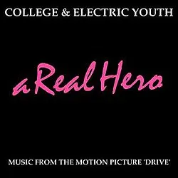
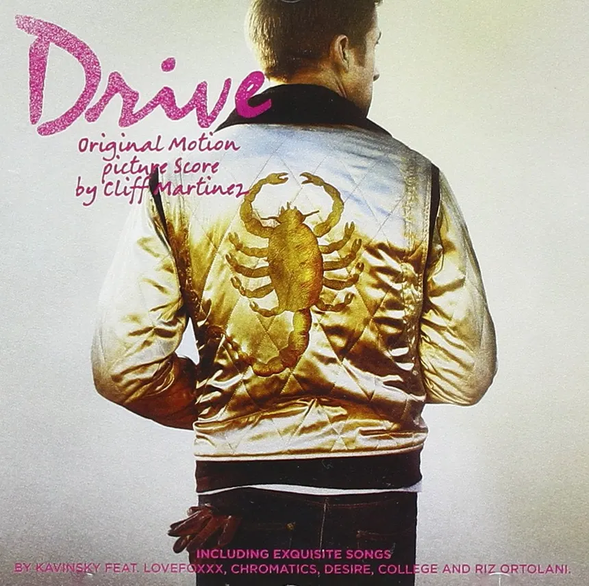
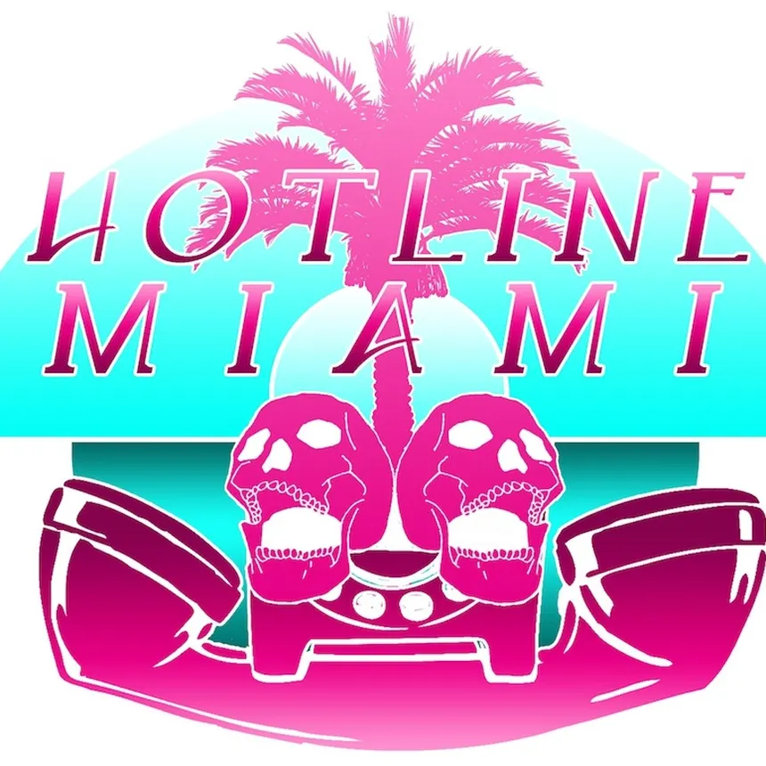
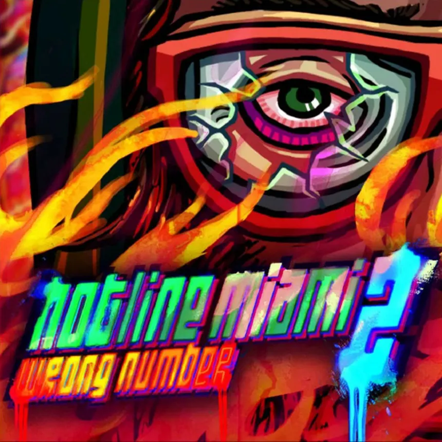
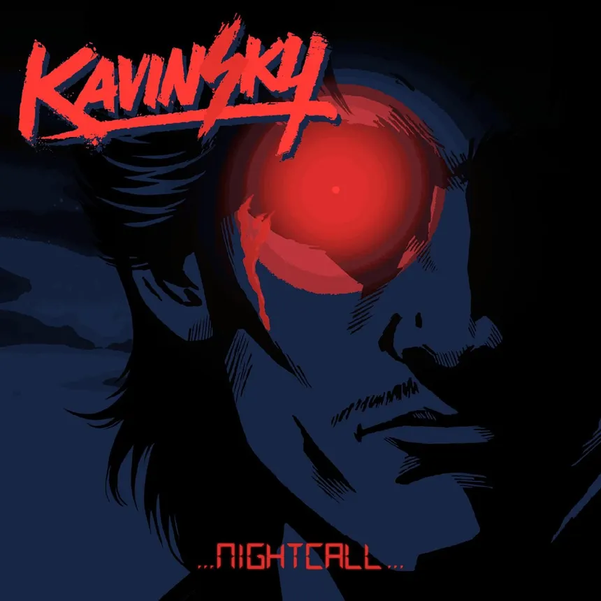

A Real Hero (Single)
Виконавці: College & Electric Youth
Жанр: Indie Pop / Synthpop | Категорія: Drive
Рік: | Треків: 1

Епічний синтпоп-трек про справжнього героя та людяність.
Каталог саундтреків у стилі synthwave
Виконавці: College & Electric Youth
Жанр: Indie Pop / Synthpop | Категорія: Drive
Рік: | Треків: 1

Епічний синтпоп-трек про справжнього героя та людяність.
Виконавці: Cliff Martinez, Kavinsky
Жанр: Synthwave / Film Score | Категорія: Drive
Рік: | Треків: 19

Культовий саундтрек до фільму «Drive».
Виконавці: M.O.O.N., El Huervo, Scattle
Жанр: Synthwave / Darksynth | Категорія: Hotline Miami
Рік: | Треків: 22

Легендарний саундтрек культової гри.
Виконавці: Carpenter Brut, Perturbator
Жанр: Darksynth / Cyberpunk | Категорія: Hotline Miami
Рік: | Треків: 49

Масштабне продовження із шаленими електронними треками.
Виконавець: M.O.O.N.
Жанр: Techno / Synthwave | Категорія: Hotline Miami
Рік: | Треків: 4
Мінімалістичний альбом із треками Hydrogen та Paris.
Виконавець: Kavinsky
Жанр: Synthwave / Electro | Категорія: Drive
Рік: | Треків: 13

Альбом з головним треком Nightcall.